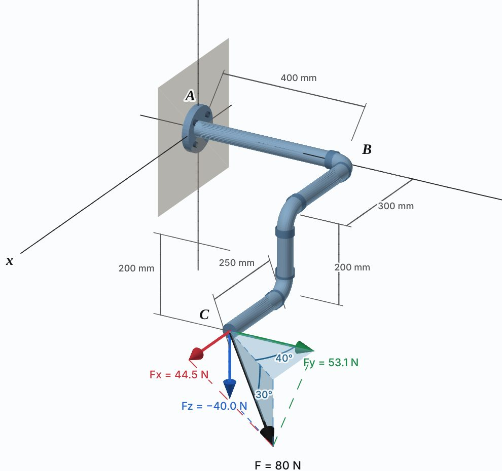

Professor Yunfeng Shi · Rensselaer Polytechnic Institute
Interactive 3D models for the course. Each one opens in any web browser, on a laptop or a phone, with nothing to install. Drag to rotate, scroll or pinch to zoom.

Resolve F = 80 N into Fx, Fy and Fz, then press Play to watch each component turn the pipe about the x, y or z axis.